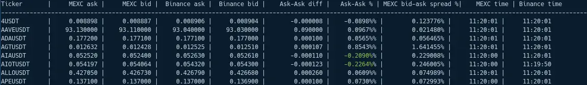

Арбитражные сделки в пределах одной биржи
Дисклеймер и что делать перед чтением
Все что ниже на твой страх и риск.
Статью я написал, ясно дело, в основном, чтобы рефссылки раздать на MEXC, Tradingview и Binance (здесь
недоработка, потом воткну).
Но я сам так делаю. С мелким депо, минимум движений, удачей (без нее везде сложновато, в трейдинге
тем более, спроси 95% вылетевших) это выходит сейчас ~170% в год. Статы есть, лень шарить. Спроси в Телеге,
если что.
Арбитраж на пальцах
На научное объяснение не претендую, да и расскажу здесь только про арбитраж спота и фьючей.
Смысл в следующем:
- ищешь пару активов где доступен спот и фьюч и имеется периодическое расхождение в цене.
- ждешь когда цена спота станет ниже цены фьюча (обычно 0.4% это уже норм) и открываешь лонг позу на споте, шорт на фьюче (одинаковый объем)
- ждешь схождения цены (цена спота становится равной, а лучше выше чем фьюча) и закрываешь спот и фьюч
Арбитраж на бирже MEXC на примере
В реальности это выглядит так:Биржа MEXC: spot: XMRUSDT: 300$, perpetual: XMRUSDT.P:
301$ (так в принципе бывает, можешь посмотреть)
покупаешь 1 XMR на споте (300 баксов) и продаешь сразу 1 XMR контракт на фьючах. Тут задействовано уже не
300 баксов, а
30.1, т.к. ты берешь плечо 10х. Итого в сделке 330.1
Цена пришла допустим к:
spot: 290$, perp: 290$ (т.е. в целом упала и сравнялась)
Ловко выходим из сделки:
продаем спот за 290$ (т.е. 1 XMR за 290$ понятно дело получили 290$)
закрываем perpetual позицию. Она закрывается так: 1 контракт по 301 было, 290 стало, т.е. прибыль составила (301-290) * 1 = 11$
продаем спот за 290$ (т.е. 1 XMR за 290$ понятно дело получили 290$)
закрываем perpetual позицию. Она закрывается так: 1 контракт по 301 было, 290 стало, т.е. прибыль составила (301-290) * 1 = 11$
Итого: на споте стало на 10$ меньше, т.е. 290$, на фьючах же добавилось 11$. Прибыток: 1$
Как найти актив для арбитража
Руками:
составь себе список на Tradingview в виде
MEXC:XMRUSDT/MEXC:XMRUSDT.P и пройди по нему.
Автоматом:
наверное есть сервисы. Но не факт что точные. Я пользовался последний раз таким, он
отдавал пары с задержками, а многих не было вообще.
У меня есть своя прога.
Выглядит так:

Почему тут MEXC да и в целом так советую?
Комиссии.
Комиссии, на которые новичок плюет, никакой блоггер не рассказывает да и в целом про них не
вспоминают.
Но они есть.
И выглядит это так.
Комиссия makerа (когда ордера исполняются через лимитные заявки) допустим 0.018% (бинанс сейчас со
скидкой). Фигня, скажешь ты,
вот еще, копейки, даже и меньше. Я же планирую взять 1% движения, где там 0.018%, дарю.
Теперь считаем:
Открываешься с 30$ на 300$, платишь 0.054
Закрываешься с 290$, платишь 0.0522
Уже 0.1$
И это только фьючи посчитали. На споте допустим бинанс не так щедр. Fee на таком уровне 0.1%. Итого:
Открытие 300$(0.3$)+Закрытие 290$(0.29)=0.59$
Итог такой манипуляции понятен? Ты думал, что заработал 1$. Реальность это 1-0.59-0.1, т.е. 0.31$
твой профит
MEXC очень часто предлагает 0% комиссии, пока это так - это лучшая биржа для такого мелкого арбитража и вообще для торговли
Итоги
Регайся на MEXC :)